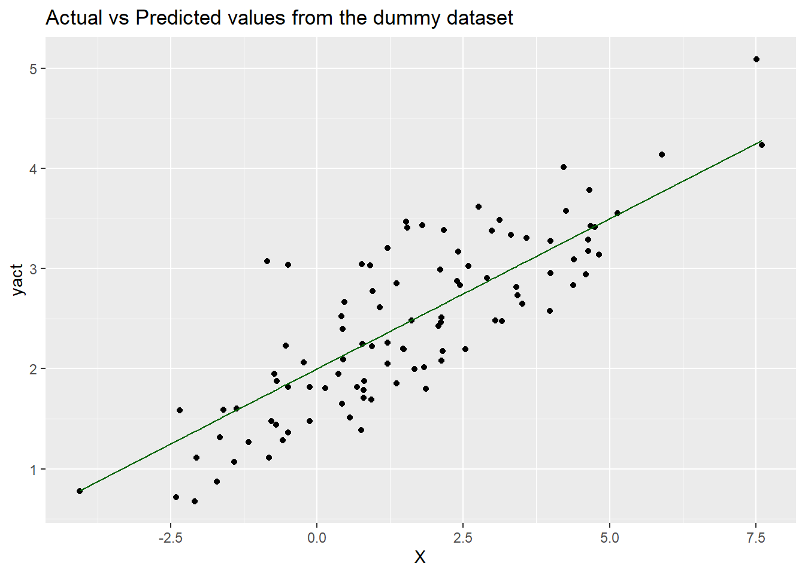
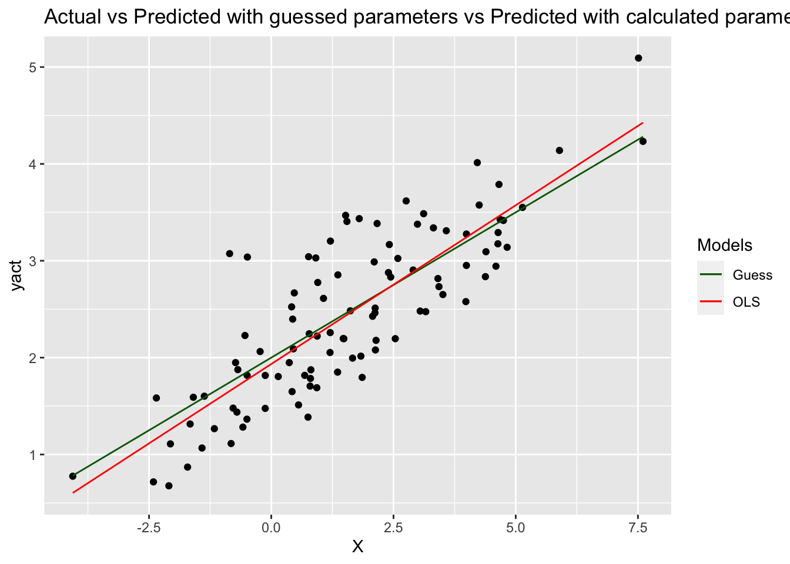
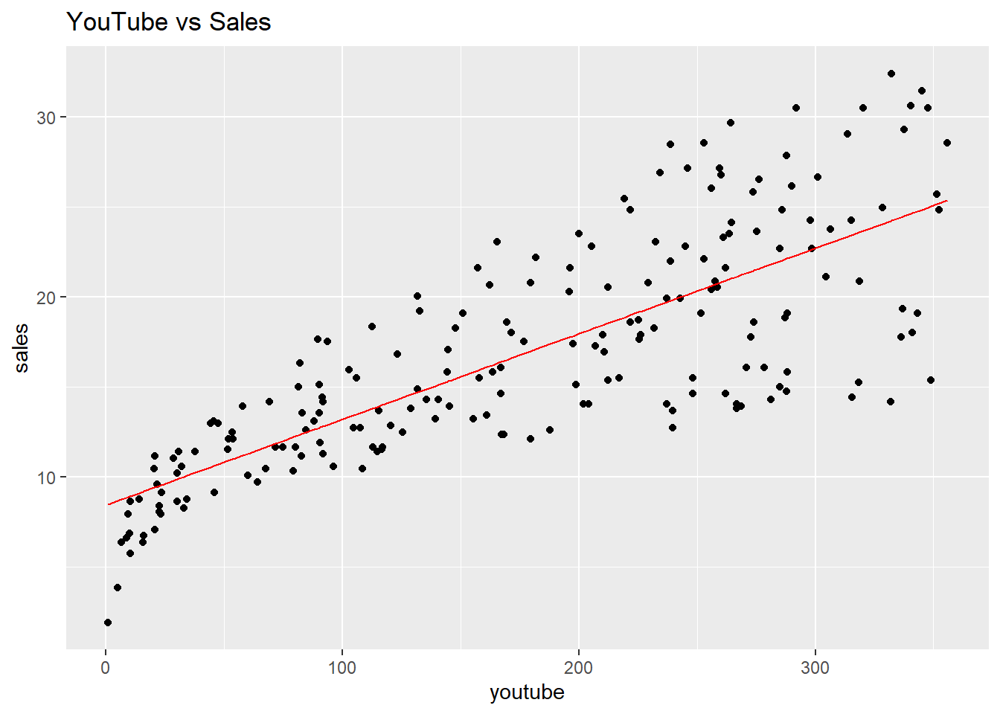

Chapter 2 Introduction to Linear Regression
Acknowledgements: this chapter is adapted and updated from the materials originally produced by STAT1005 teaching team, especially Prof. Jeff Yao.
2.1 Linear Regression Using Simulated Data
Let’s first simulate some data and look at how the predicted values (Ye) differ from the actual value (Y).
2.1.1 Simulating data:
For X, we generate 100 normally distributed random numbers with mean 1.5 and standard deviation 2.5.
For predicted value Ye, we assume an intercept (α) of 2 and a slope (β) of 0.3 and we write \(Y_e = 2 + 0.3 x\)
Later, we will estimate the values of α and β using the least squares method and see how that changes the efficacy of the model.
Though we estimate \(Y_e = \alpha + \beta X\), in reality Y is rarely perfectly linear. It usually has an error component or residual: \(Y = \alpha + \beta X + R\), where R is a random variable and is assumed to be normally distributed.
Therefore for the actual value Y, we add a residual term (
res), a random variable distributed normally with mean 0 and a standard deviation of 0.5.
The following cell shows the code snippet to generate these numbers and convert these three columns in a data frame. Read through the code carefully and run the cell to output a sample of our simulated data.
# Fix seed: each run gives the same random numbers so the same outputs.
# Commenting out this line would read similar but different outputs at each run.
# Try it out!
set.seed(0)
# Generate data
X = 2.5 * rnorm(100) + 1.5 # Array of 100 values with mean = 1.5, stddev = 2.5
ypred = 2 + 0.3 * X # Prediction of Y, assuming a = 2, b = 0.3
res = 0.5 * rnorm(100) # Generate 100 residual terms
yact = 2 + 0.3 * X + res # Actual values of Y
# Create dataframe to store our X, ypred, and yact values
df = data.frame('X' = X, 'ypred' = ypred, 'yact' = yact)# Show the first six rows of our dataframe
head(df)
#> X ypred yact
#> 1 4.6573857 3.397216 3.788145
#> 2 0.6844166 2.205325 1.816937
#> 3 4.8244982 3.447349 3.139354
#> 4 4.6810733 3.404322 3.427612
#> 5 2.5366036 2.760981 2.195788
#> 6 -2.3498751 1.295037 1.583397Now let’s plot both the actual output (yact) and predicted output (ypred)
against the input variable (X) to see what the difference between yact and
ypred is, and therefore, to see how accurately the proposed equation
(ypred = 2 + 0.3 * X) has been able to predict the value of the output:
# You can use basic plotting functions
# plot(x=df$X, y=df$yact, col="red")
# lines(x=df$X, y=df$ypred, col="darkgreen")
# But let's use ggplot2 for higher flexibility
library(ggplot2)
ggplot(df, aes(X)) + # basic graphical object
geom_point(aes(y=yact), colour="black") + # first layer
geom_line(aes(y=ypred), colour="darkgreen") + # second layer
ggtitle('Actual vs Predicted values from the dummy dataset')
2.1.2 Model efficacy
How do we know the values we calculate for α and β are giving us a good model? We can explain the total variability in our model with the Total Sum of Squares or SST:
\[SST = \sum_{i=1}^n\Bigl(\text{yact}_i - \text{yavg}\Bigr)^2, \qquad\qquad \text{yavg}=\frac1n \sum_{i=1}^n \text{yact}_i\]
Mathematically, we have
\[ \sum_{i=1}^n\Bigl(\text{yact}_i - \text{yavg}\Bigr)^2 = \sum_{i=1}^n\Bigl(\text{ypred}_i -\text{yavg} \Bigr)^2 + \sum_{i=1}^n\Bigl(\text{yact}_i - \text{ypred}_i\Bigr)^2\]
The identity reads as
Sum of Squares Total = Sum of Squares Regression + Sum of Squares Error,
or simply ,
SST = SSR + SSE.
The Regression Sum of Squares or SSR measures the variation of the
regression/predicted values, and the Sum of Squares Error SSE the
variation between the actual and the predicted values.
An alternative saying is that SSR is the difference explained by the model, SSE
is the difference not explained by the model and is random, and SST is the
total error.
Note, we often use SSE (Sum of Squares Error) and SSD (Sum of Squares
Difference) interchangeably.
2.1.3 R-Squared
The higher the ratio of SSR to SST, the better the model is. This ratio is quantified by the coefficient of determination (also known as R2 or R-squared):
\[ R^2= \frac{SSR}{SST}\]
Since \(SST= SSR+SSE\), \(\qquad 0\le R^2\le 1\).
The closer it is to 1, the better the model. Note that there are many other factors that we need to analyse before we can conclude a linear regression model is effective, but a high \(R^2\) is a pretty good indicator.
Let’s see what the value of \(R^2\) is for our simulated dataset.
# Calculate the mean of Y
ymean = mean(df$yact)
print(paste('Mean of Y =', ymean)) # paste brings a white space by default
#> [1] "Mean of Y = 2.44422555811815"
# Calculate SSR and SST
df['SSR'] = (df['ypred'] - ymean)**2
df['SST'] = (df['yact'] - ymean)**2
SSR = sum(df['SSR'])
SST = sum(df['SST'])
# Calculate R-squared
R2 = SSR / SST
print(paste('R2 =', R2))
#> [1] "R2 = 0.583160943681119"The value of \(R^2=0.583\) suggests that ypred provides a decent prediction of
the yact.
We have randomly assumed some values for \(\alpha\) and \(\beta\), but these may or may not be the best values. In the next step, we will use the least sum of square method to calculate the optimum value for \(\alpha\) and \(\beta\) to see if there is an improvement in \(R^2\).
To get started on the next step, open the notebook called 02-linearReg-02.Rmd.
2.2 Least Squares Using Simulated Data
Now, using our simulated data from the previous step, let’s estimate the optimum values of our variable coefficients, \(\alpha\) and \(\beta\). Using the predictor variable, X, and the output variable, yact, we will calculate the values of \(\alpha\) and \(\beta\) using the Least Squares method described in the lecture.
The cell below creates the same dataframe as previously. Run the cell to get started!
set.seed(0)
# Generate data
X = 2.5 * rnorm(100) + 1.5 # Array of 100 values with mean = 1.5, stddev = 2.5
ypred = 2 + 0.3 * X # Prediction of Y, assuming a = 2, b = 0.3
res = 0.5 * rnorm(100) # Generate 100 residual terms
yact = 2 + 0.3 * X + res # Actual values of Y
# Create dataframe to store our X, ypred, and yact values
df = data.frame('X' = X, 'ypred' = ypred, 'yact' = yact)Just to reiterate, here are the formulas for \(\alpha\) and \(\beta\) again:
\[\hat\beta=\frac{\sum_{i=1}^n(X_i-\bar X)(Y_i-\bar Y)}{\sum_{i=1}^n(X_i-\bar X)^2}=\frac{\text{cov}(X,Y)}{\text{var}(X)}\]
\[\hat\alpha=\bar Y-\hat\beta * \bar X\]
To calculate these coefficients, we will create a few more columns in our df
data frame. We need to calculate xmean and ymean to calculate the covariance
of X and Y (xycov) and the variance of X (xvar) before we can work out the
values for alpha and beta.
# Calculate the mean of X and Y
xmean = mean(X)
ymean = mean(yact)
# Calculate the terms needed for the numator and denominator of beta
df['xycov'] = (df['X'] - xmean) * (df['yact'] - ymean)
df['xvar'] = (df['X'] - xmean)**2
# Calculate beta and alpha
beta = sum(df['xycov']) / sum(df['xvar'])
alpha = ymean - (beta * xmean)
print(paste('alpha =', alpha, ';', 'beta =', beta))
#> [1] "alpha = 1.93401265576322 ; beta = 0.327758955833308"As we can see, the values are only a little different from what we had assumed earlier.
Let’s see how the value of \(R^2\) changes if we use the new values of \(\alpha\) and \(\beta\).
The equation for the new model can be written as: \[ y=1.934 + 0.328 * x \]
Let’s create a new column in df to accommodate the values generated by this
equation and call this ypred2, and calculate the new \(R^2\).
# Create new column to store new predictions
df['ypred2'] = alpha + beta * df['X']
# Calculate new SSR with new predictions of Y.
# Note that SST remains the same since yact and ymean do not change.
df['SSR2'] = (df['ypred2'] - ymean)**2
df['SST'] = (df['yact'] - ymean)**2
SSR2 = sum(df['SSR2'])
SST = sum(df['SST'])
# Calculate new R2
R2_2 = SSR2 / SST
print(paste('New R2 =', R2_2))
#> [1] "New R2 = 0.69524214766491"The new value of \(R^2= 0.695\) shows a slight improvement from the previous value of \(R^2=0.583\) (obtained with \(\alpha=2,~\beta=0.3\)).
Let’s also plot our new prediction model against the actual values and our earlier assumed model, just to get a better visual understanding.
library(ggplot2)
# Put color into aes
ggplot(df, aes(X)) + # basic graphical object
geom_point(aes(y=yact), colour="black") + # first layer
geom_line(aes(y=ypred, colour="Guess")) + # second layer
geom_line(aes(y=ypred2, colour="OLS")) + # third layer
scale_colour_manual(name="Models", values = c("Guess"="darkgreen", "OLS"="red")) +
ggtitle('Actual vs Predicted with guessed parameters vs Predicted with calculated parameters')
As we can see, the ypred2 and ypred are more or less overlapping since the
respective values of ɑ and β are not very different.
Next, we will explore other methods of determining model efficacy by using the
notebook called 02-linearReg-03.Rmd.
2.3 Diagnostic check of a fitted regression model
Apart from the \(R^2\) statistic, there are other statistics and parameters that you need to look at in order to determine if the model is efficient. We will discuss some commonly used statistics – Residual Standard Errors, \(p\)-values, and \(F\)-statistics.
2.3.1 Residual Standard Errors (RSE)
RSE is a common statistic used to calculate the accuracy of values predicted by
a model. It is an estimate of the variance of the error term, res. For a
simple linear regression model, RSE is defined as:
\[ RSE^2 = \frac{SSE}{n-2} = \frac1{n-2} \sum_{i=1}^n \Bigl(\text{yact}_i - \text{ypred}_i \Bigr)^2.
\]
In general,
\[ RSE^2 = \frac{SSE}{n-p-1} = \frac1{n-p-1} \sum_{i=1}^n \Bigl(\text{yact}_i - \text{ypred}_i \Bigr)^2. \]
where \(p\) is the number of predictor variables in a model where we have more than one predictor variables.
A multiple linear regression model is a linear regression model with
multiple predictors, written as
\[ Y_e = \alpha +\beta_1 * X_1 +\cdots +\beta_p X_p.
\]
As you see, the parameters and predictors are subscripted from 1 up to the number of predictors \(p\).
In multiple regression, the value of RSE generally decreases as we add variables that are more significant predictors of the output variable.
Using our simulated data from the previous steps, the following code snippet shows how the RSE for a model can be calculated:
set.seed(0)
# Generate data
X = 2.5 * rnorm(100) + 1.5 # Array of 100 values with mean = 1.5, stddev = 2.5
res = 0.5 * rnorm(100) # Generate 100 residual terms
yact = 2 + 0.3 * X + res # Actual values of Y
# Create dataframe to store our X, ypred, and yact values
df = data.frame('X' = X, 'yact' = yact)
# Calculate the mean of X and Y
xmean = mean(X)
ymean = mean(yact)
# Calculate the terms needed for the numator and denominator of beta
df['xycov'] = (df['X'] - xmean) * (df['yact'] - ymean)
df['xvar'] = (df['X'] - xmean)**2
# Calculate beta and alpha
beta = sum(df['xycov']) / sum(df['xvar'])
alpha = ymean - (beta * xmean)
print(paste('alpha =', alpha, ';', 'beta =', beta))
#> [1] "alpha = 1.93401265576322 ; beta = 0.327758955833308"
# Store predictions as in previous step
df['ypred'] = alpha + beta * df['X']
# Show first five rows of dataframe
head(df)
#> X yact xycov xvar ypred
#> 1 4.6573857 3.788145 4.1671116 9.6144310 3.460513
#> 2 0.6844166 1.816937 0.5471556 0.7608280 2.158336
#> 3 4.8244982 3.139354 2.2715611 10.6786935 3.515285
#> 4 4.6810733 3.427612 3.0724952 9.7618890 3.468276
#> 5 2.5366036 2.195788 -0.2434518 0.9602676 2.765407
#> 6 -2.3498751 1.583397 3.3628671 15.2611034 1.163820# Calculate SSE
df['SSE'] = (df['yact'] - df['ypred'])**2
SSE = sum(df['SSE'])
# Calculate RSE
RSE = sqrt(SSE / 98) # n = 100
print(paste('RSE =', RSE))
#> [1] "RSE = 0.481279277134956"The value of RSE comes out to be 0.48.
As you might have guessed, the smaller the residual standard errors, the better the model is.
The benchmark to compare this to is the mean of the actual values, yact. As
shown previously, this value is ymean = 2.54. In plain English, this means we
observe an error of 0.48 over 2.44 - approximately 19.69%.
2.3.2 p-values
The calculation of \(\alpha\) and \(\beta\) are estimates, not exact calculations. Whether their values are significant or not needs to be tested using a hypothesis test.
In the equation, \(Y = \alpha + \beta X\), if we set \(\beta=0\), there will be no relation between \(Y\) and \(X\). Therefore, the hypothesis tests whether the value of \(\beta\) is non-zero or not.
\[\begin{align*} \text{Null hypothesis}~ H_0~:~ \beta=0, & \quad \text{versus} \\ \text{Alternative hypothesis}~ H_1~:~ \beta\ne 0.& \end{align*} \]
Whenever a regression task is performed and \(\beta\) is calculated, there will be an accompanying p-value corresponding to this hypothesis test. We will not go through how this is calculated in this course (you can learn more here), since it is calculated automatically by ready-made methods in R.
If the p-value is less than a chosen significance level (e.g. 0.05) then the null hypothesis that \(\beta = 0\) is rejected and \(\beta\) is said to be significant and non-zero.
In the case of multiple linear regression, the p-value associated with each \(\beta_k\) can be used to weed out insignificant predictors from the model. The higher the p-value for \(\beta_k\), the less significant \(X_k\) is to the model.
2.3.3 F-statistics
In a multiple regression model, apart from testing the significance of individual variables by checking the p-values, it is also necessary to check whether, as a group all the predictors are significant. This can be done using the following hypothesis:
\[\begin{align*} \text{Null hypothesis}~ H_0~:~ & \beta_1=\beta_2=\cdots=\beta_p=0, \quad \text{versus} \\ \text{Alternative hypothesis}~ H_1~:~& \text{at least one of the} ~\beta_k's ~ \text{is non zero}. \end{align*} \]
The statistic that is used to test this hypothesis is called the F-statistic and is defined as follows:
\[ F\text{-statistic} = \text{Fisher statistic}= \frac{ (SST-SSE)/p}{ SSE/(n-p-1)} \]
where \(n\) = number of rows (sample points) in the dataset and \(p\) = number of predictor variables in the model.
There is a \(p\)-value that is associated with this \(F\)-statistic. If the \(p\)-value is smaller than the chosen significance level, the null hypothesis can be rejected.
It is important to look at the F-statistic because:
- p-values are about individual relationships between predictors and the outcome variable. However, one predictor’s relationship with the output might be impacted by the presence of other variables.
- When the number of predictors in the model is very large and all the \(\beta_i\) are very close to zero, the individual p-values associated with the predictors might give very small values so we might incorrectly conclude that there is a relationship between the predictors and the outcome.
2.4 Simple Linear Regression with lm function
There are a few R packages, e.g., the built-in stat package have a lm
(linear model) function to fit linear regression very easy - much easier than
implementing from scratch like we did in the last lesson. See more details in the
lm manual.
We will start with the datarium library which contain the advertising data.
# Install datarium library if you haven't
if (!requireNamespace("datarium", quietly = TRUE)) {
install.packages("datarium")
}
library(datarium)
# Load data: then we will have a data.frame with name marketing
data(marketing)
head(marketing)
#> youtube facebook newspaper sales
#> 1 276.12 45.36 83.04 26.52
#> 2 53.40 47.16 54.12 12.48
#> 3 20.64 55.08 83.16 11.16
#> 4 181.80 49.56 70.20 22.20
#> 5 216.96 12.96 70.08 15.48
#> 6 10.44 58.68 90.00 8.64We can also check summary statistics of each column
summary(marketing)
#> youtube facebook newspaper sales
#> Min. : 0.84 Min. : 0.00 Min. : 0.36 Min. : 1.92
#> 1st Qu.: 89.25 1st Qu.:11.97 1st Qu.: 15.30 1st Qu.:12.45
#> Median :179.70 Median :27.48 Median : 30.90 Median :15.48
#> Mean :176.45 Mean :27.92 Mean : 36.66 Mean :16.83
#> 3rd Qu.:262.59 3rd Qu.:43.83 3rd Qu.: 54.12 3rd Qu.:20.88
#> Max. :355.68 Max. :59.52 Max. :136.80 Max. :32.40This dataset contains data about the advertising budget spent on YouTub, Radio, and Newspapers for a particular product and the resulting sales. We expect a positive correlation between such advertising costs and sales.
Let’s start with YouTub advertising costs to create a simple linear regression model. First let’s plot the variables to get a better sense of their relationship:
# Create scatter plot
library(ggplot2)
ggplot(marketing, aes(x=youtube, y=sales)) +
geom_point(colour="black") +
ggtitle('YouTube vs Sales')As YouTube advertisement cost increases, sales also increase – they are positively correlated!
Now with the linear model lm function, let’s create a line of best fit using
the least sum of square method.
# Fit linear regression
# By default it include an incepter, so it is equvialent to add "+ 1"
# res.lm <- lm(sales ~ youtube + 1, data = marketing)
res.lm <- lm(sales ~ youtube, data = marketing)In the above code, we used lm to fit our simple linear regression model. This
takes the formula y ~ X, where X is the predictor variable (YouTube
advertising costs) and y is the output variable (Sales). Then, this function
will return fitted model via a ordinary least squares (OLS) method. The res.lm
is a list, you can get the it attributes by e.g., res.lm$coefficients
In the notation that we have been using, \(\alpha\) is the intercept and \(\beta\) is the slope i.e.:
\(\alpha = 8.439, \quad \beta = 0.048\)
Thus, the equation for the model will be:
\(\text{Sales} = 8.439 + 0.048*\text{YouTube}\)
Let’s also check an indicator of the model efficacy, R2. Luckily,
summary function can calculate it from the lm output and gives us a
ready-made method for doing this so we don’t need to code all the math ourselves:
res_summary = summary(res.lm)
# Again, res_summary is also a list
res_summary$r.squared
#> [1] 0.6118751We can also take a look at the model summary by writing this snippet:
# Print out the summary
summary(res.lm)
#>
#> Call:
#> lm(formula = sales ~ youtube, data = marketing)
#>
#> Residuals:
#> Min 1Q Median 3Q Max
#> -10.0632 -2.3454 -0.2295 2.4805 8.6548
#>
#> Coefficients:
#> Estimate Std. Error t value Pr(>|t|)
#> (Intercept) 8.439112 0.549412 15.36 <2e-16 ***
#> youtube 0.047537 0.002691 17.67 <2e-16 ***
#> ---
#> Signif. codes: 0 '***' 0.001 '**' 0.01 '*' 0.05 '.' 0.1 ' ' 1
#>
#> Residual standard error: 3.91 on 198 degrees of freedom
#> Multiple R-squared: 0.6119, Adjusted R-squared: 0.6099
#> F-statistic: 312.1 on 1 and 198 DF, p-value: < 2.2e-16There is a lot here. Of these results, we have discussed:
- R-squared
- F-statistic
- Prob (F-statistic) - this is the p-value of the F-statistic
- Intercept coef - this is
alpha - YouTub coef - this is
betafor predictorYouTub - P>|t| - this is the p-value for our coefficients
Now that we’ve fit a simple regression model, we can try to predict the values of sales based on the equation we just derived!
sales_pred = predict(res.lm, newdata = marketing[c('youtube')])
marketing['sales_pred'] = sales_predThe predict fucntion predicts sales value for each row based on the model
equation using YouTub costs. This is the equivalent of manually typing out our
equation: sales_pred = 8.439 + 0.048*(advert['youtube']).
We can visualise our regression model by plotting sales_pred against the
YouTube advertising costs to find the line of best fit:
library(ggplot2)
ggplot(marketing, aes(x=youtube)) +
geom_point(aes(y=sales), colour="black") +
geom_line(aes(y=sales_pred), colour="red") +
ggtitle('YouTube vs Sales')
In the next step, we will add more features as predictors and see whether it improves our model. Go to the the notebook called 02-linearReg-05.Rmd.
2.5 Multiple Regression with lm function
A multiple linear regression is simply a linear regression that involves more than one predictor variable. It is represented as: \[\qquad Y_e = \alpha + \beta_1*X_1 + \beta_2*X_2 + \dots + \beta_p*X_p\]
Each βi will be estimated using the least sum of squares method.
The data set is
\[ \begin{array}
{~~} Y_1, & X_1^{(1)}, & \ldots, & X_p^{(1)} \\
Y_2, & X_1^{(2)}, & \ldots, & X_p^{(2)} \\
\vdots & \vdots & \vdots & \vdots \\
Y_n, & X_1^{(n)}, & \ldots, & X_p^{(n)}
\end{array}
\]
For each sample \(i\), the predicted value by the model is:
\(\qquad Y_{i,e} = \alpha + \beta_1*X_1^{(i)} + \beta_2*X_2^{(i)} + \dots + \beta_p*X_p^{(i)}\)
Define the sum of squares
\[ S(\alpha,\beta_1,\ldots,\beta_p) = \sum_{i=1}^n
\left\{ Y_i -Y_{i,e}\right\}^2 =\sum_{i=1}^n \left\{
Y_i -\left( \alpha + \beta_1*X_1^{(i)} + \beta_2*X_2^{(i)} + \dots + \beta_p*X_p^{(i)}\right)\right\}^2
\]
Least squares estimators: solve
\[ \frac{\partial S(\alpha,\beta_1,\ldots,\beta_p)}{\partial \alpha}=0,\quad
\frac{\partial S (\alpha,\beta_1,\ldots,\beta_p)}{\partial \beta_1}=0,\quad \ldots,\quad
\frac{\partial S (\alpha,\beta_1,\ldots,\beta_p)}{\partial \beta_p}=0.
\]
to obtain the least squares estimators of the parameters
\[ \hat\alpha, \hat\beta_1,\ldots,\hat\beta_p.
\]
Note that be definition,
\[ SSE = S(\hat\alpha, \hat\beta_1,\ldots,\hat\beta_p).
\]
In other words, the fitted SSE (sum of squares error) is the minimized
value of the sum squares with the estimated values of the parameters.
The more varibles, the smaller the \(R^2\)
Consider two regression models
\(\quad ~ Y_e = \alpha + \beta_1*X_1\)
\(\quad \tilde Y_e = \alpha + \beta_1*X_1 + \beta_2*X_2\)
The model (II) has one more input variable \(X_2\).
The \(SSE_I\) of Model (I) is the minimum of
\[ S_I(\alpha,\beta_1) = \sum_{i=1}^n \left\{ Y_i -\left( \alpha + \beta_1*X_1^{(i)} \right)\right\}^2 \] over all possible values of \((\alpha,\beta_1)\).
The \(SSE_{II}\) of Model (II) is the minimum of
\[ S_{II}(\alpha,\beta_1,\beta_2) = \sum_{i=1}^n \left\{ Y_i -\left( \alpha + \beta_1*X_1^{(i)} +\beta_2*X_2^{(i)} \right)\right\}^2. \] over all possible values of \((\alpha,\beta_1,\beta_2)\).
Because \(\quad S_I(\alpha,\beta_1) = S_{II}(\alpha,\beta_1,\beta_2=0 )\),
we find that \(SSE_{II}\le SSE_I\), so \[ R^2_{II} = SST - SSE_{II} \ge SST - SSE_{I} = R^2_{I}. \]
With this simple dataset of three predictor variables, there can be seven possible models:
- Sales ~ YouTube
- Sales ~ Newspaper
- Sales ~ Facebook
- Sales ~ YouTube + Facebook
- Sales ~ YouTube + Newspaper
- Sales ~ Newspaper + Facebook
- Sales ~ YouTube + Facebook + Newspaper
Generally, if there are p possible predictor variables, there can be (2p - 1) possible models – this can get large very quickly!
Thankfully, there are a few guidelines to filter some of these and then navigate towards the most efficient one.
- Keep variables with low p-values and eliminate ones with high p-values
- Keep variables that increase the value of adjusted-R2 – this penalizes the model for adding insignificant variables and increases when we add significant variables. It is calculated by: \[ R^2_{adj} = 1- (1-R^2) \frac{n-1}{n-p-1}\]
Based on these guidelines, there are two approaches to select the predictor variables in the final model:
- Forward selection: start with a null model (no predictors), then add predictors one by one. If the p-value for the variable is small enough and the value of the adjusted-R2 goes up, the predictor is included in the model. Otherwise, it is not included.
- Backward selection: starts with a model that has all the possible predictors and discard some of them. If the p-value of a predictor variable is large and adjusted-R2 is lower when removed, it is discarded from the model. Otherwise, it remains a part of the model.
Many statistical programs give us an option to select from these approaches while implementing multiple linear regression.
For now, let’s manually add a few variables and see how it changes the model
parameters and efficacy. First, add the newspaper variable to the model:
library(datarium)
data(marketing)
head(marketing)
#> youtube facebook newspaper sales
#> 1 276.12 45.36 83.04 26.52
#> 2 53.40 47.16 54.12 12.48
#> 3 20.64 55.08 83.16 11.16
#> 4 181.80 49.56 70.20 22.20
#> 5 216.96 12.96 70.08 15.48
#> 6 10.44 58.68 90.00 8.64res_lm2 = lm(sales ~ youtube + newspaper, data=marketing)
summary(res_lm2)
#>
#> Call:
#> lm(formula = sales ~ youtube + newspaper, data = marketing)
#>
#> Residuals:
#> Min 1Q Median 3Q Max
#> -10.3477 -2.0815 -0.1138 2.2711 10.1415
#>
#> Coefficients:
#> Estimate Std. Error t value Pr(>|t|)
#> (Intercept) 6.929938 0.630405 10.993 < 2e-16 ***
#> youtube 0.046901 0.002581 18.173 < 2e-16 ***
#> newspaper 0.044219 0.010174 4.346 2.22e-05 ***
#> ---
#> Signif. codes: 0 '***' 0.001 '**' 0.01 '*' 0.05 '.' 0.1 ' ' 1
#>
#> Residual standard error: 3.745 on 197 degrees of freedom
#> Multiple R-squared: 0.6458, Adjusted R-squared: 0.6422
#> F-statistic: 179.6 on 2 and 197 DF, p-value: < 2.2e-16As you see, the p-values for the coefficients are very small, suggesting that all the estimates are significant. The equation for this model will be:
\[ \text{Sales} = 6.93+0.046* \text{YouTube} + 0.044 * \text{Newspaper}\]
The values of R2 and adjusted R2 are 0.646 and 0.642, which is just a minor improvement from before (0.612 and 0.610, respectively).
Similarly for RSE (3.745). Only a small decrease in RSE and error…
Let’s take a closer look at the summary above. The Adj-R2 increases
slightly, but the F-statistic decreases (from 312.1 to 179.6), as does the
associated p-value. This suggests that adding newspaper didn’t improve the
model significantly.
Let’s try adding facebook instead:
# Initialise and fit new model with TV and Radio as predictors
# model3 = smf.ols('Sales ~ TV + Radio', data=advert).fit()
# print(model3.summary())
res_lm3 = lm(sales ~ youtube + facebook, data=marketing)
summary(res_lm3)
#>
#> Call:
#> lm(formula = sales ~ youtube + facebook, data = marketing)
#>
#> Residuals:
#> Min 1Q Median 3Q Max
#> -10.5572 -1.0502 0.2906 1.4049 3.3994
#>
#> Coefficients:
#> Estimate Std. Error t value Pr(>|t|)
#> (Intercept) 3.50532 0.35339 9.919 <2e-16 ***
#> youtube 0.04575 0.00139 32.909 <2e-16 ***
#> facebook 0.18799 0.00804 23.382 <2e-16 ***
#> ---
#> Signif. codes: 0 '***' 0.001 '**' 0.01 '*' 0.05 '.' 0.1 ' ' 1
#>
#> Residual standard error: 2.018 on 197 degrees of freedom
#> Multiple R-squared: 0.8972, Adjusted R-squared: 0.8962
#> F-statistic: 859.6 on 2 and 197 DF, p-value: < 2.2e-16This gives us the model:
\[ \text{Sales} = 3.51+0.046* \text{YouTube} + 0.188 * \text{Facebook}\]
The adjusted R2 value has improved considerably, as did the RSE and F-statistic, indicating an efficient model.
Thus, we can conclude that facebook is a great addition to the model.
YouTube and facebook advertising costs together are able to predict sales
well. But, can we improve it a bit further by combining all three predictor
variables?
Try it out: see if you can figure out how to do this on your own!
# Initialise and fit new model with TV, Newspaper, and Radio as predictors
# Print summary of regression results
# Calculate RSE - don't forget that the number of predictors p is now 3You should get the equation:
\[ \text{Sales} = 3.53+0.046*\text{YouTube} -0.001*\text{Newspaper} +0.188*\text{Facebook}\]
You should also find that:
- RSE increases slightly,
- the coefficient for
newspaperis negative, and - the F-statistic decreases considerably from 859.6 to 570.3.
All these suggest that the model actually became less efficient on addition of newspaper.
Why?
This step shows clearly that adding one more input variable Newspaper in
Model 3 does not lead to any improvement.